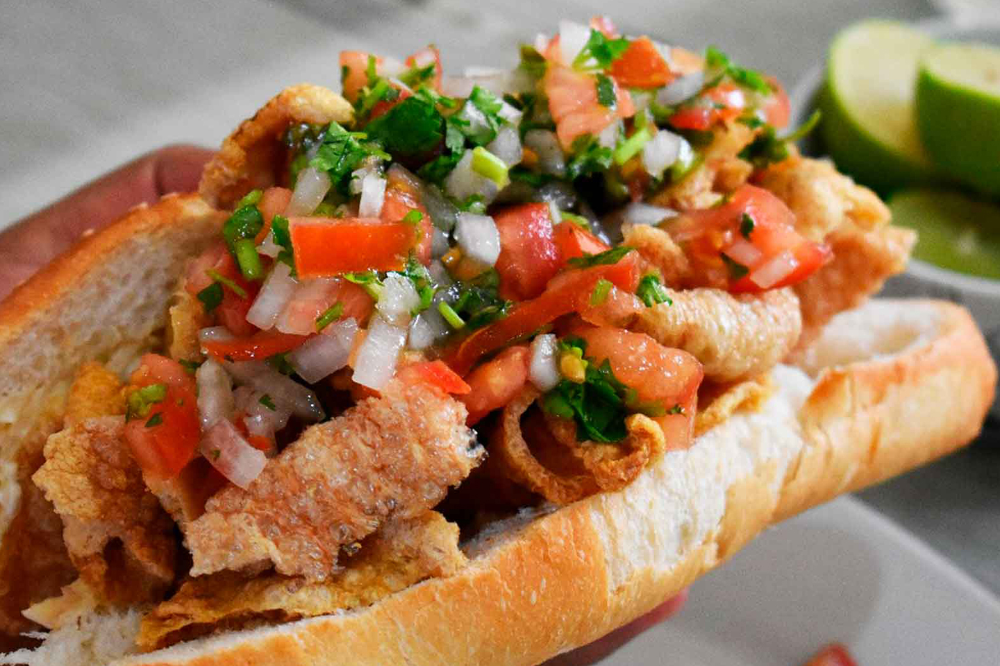

GUACAMAYAS

UN PLATILLO TAN COLORIDO COMO SABROSO, ORIUNDO DE LEÓN, GUANAJUATO. UNA VERSIÓN MUY LOCAL DE LAS TORTAS, SOLO QUE ESTAS VAN RELLENAS DE CHICHARRÓN, PICO DE GALLO Y BAÑADAS EN UNA SALSA DE CHILE DE ÁRBOL BASTENTE PICOSA, TANTO QUE LOS COMENSALES HACEN UN SONIDO PARECIDO AL DE LAS GUACAMAYAS.
SUS ORÍGENES SE REMONTAN A LA DÉCADA DE LOS 50 Y COMER GUACAMAYAS EN LOS PUESTOS, TRICICLOS O CON LOS VENDEDORES AMBULANTES ES TODA UNA TRADICIÓN PARA LOS TURISTAS LOCALES Y EXTRANJEROS QUE VISITAN LA CIUDAD DE LEÓN.